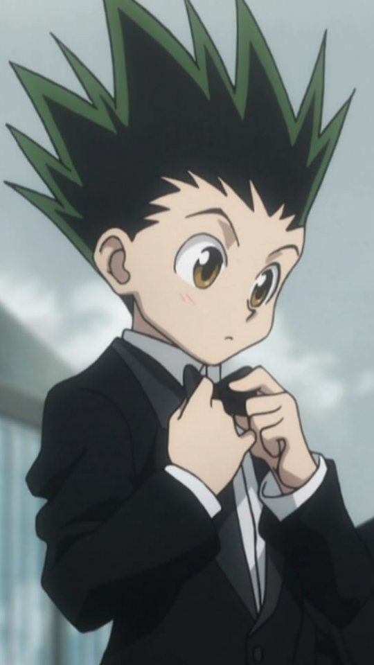
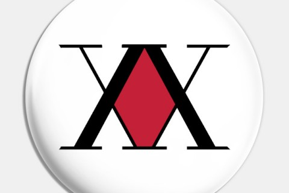
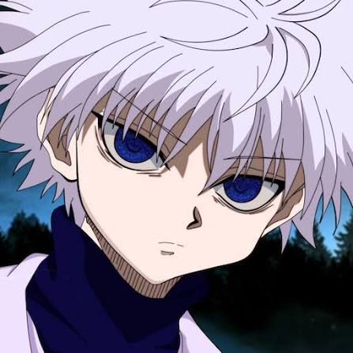
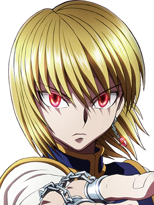

Gon Freecss
Um jovem otimista e determinado em busca de seu pai, um dos maiores Hunters de todos os tempos.

Associação HunterMonstros secretos, tesouros escondidos, terras desconhecidas e mistérios do mundo. Torne-se um Hunter e obtenha acesso ilimitado aos segredos da humanidade.
Conheça os Hunters
Um jovem otimista e determinado em busca de seu pai, um dos maiores Hunters de todos os tempos.

Herdeiro da infame família de assassinos Zoldyck, mestre em agilidade e manipulação de eletricidade.

Último sobrevivente do clã Kurta, focado em recuperar os Olhos Escarlates de seu povo e derrotar a Trupe Fantasma.
Poder Físico
Mutação da Aura
Criação Material
Projeção de Aura
Controle de Alvos
Poder Único